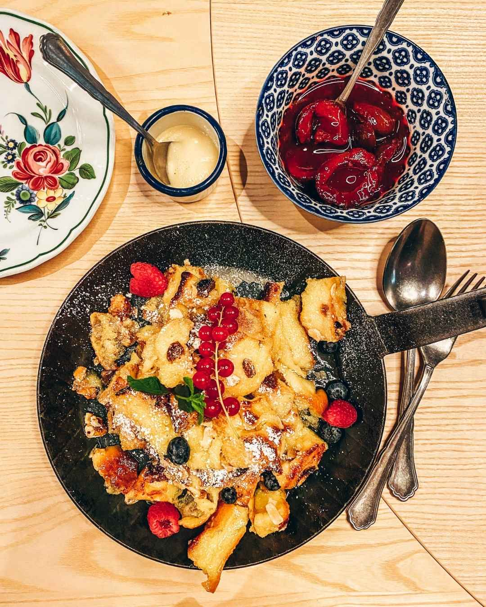

Of course there are lots of different beergardens in Munich, but it's the only one named after the Bavarian Elector Max Emanuel (1662–1726).
The Max Emanuel Brewery in Munich was founded as early as 1880 and was taken over by Löwenbräu in 1896. Since August 2022, it has been shining in a completely new light after undergoing a full two-year renovation and redesign... I get it this is not interesting and stolen from a website I don't remember but the atmosphere is nice and the food and drinks are great and it's pretty close to the city center. That has to count for something, right?
Back